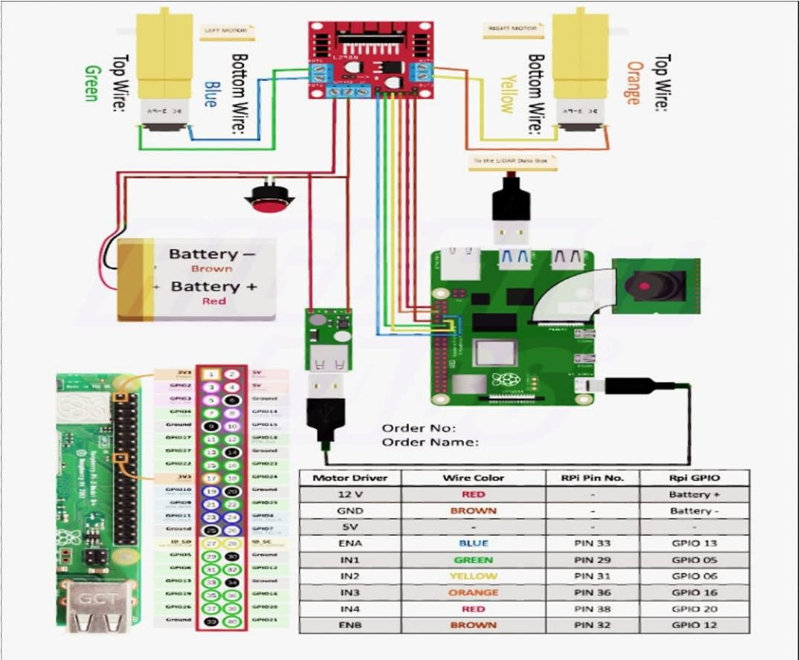
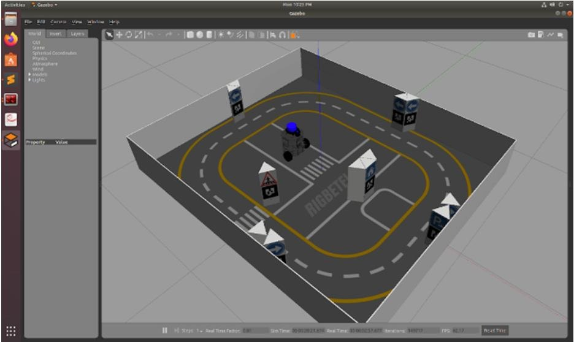
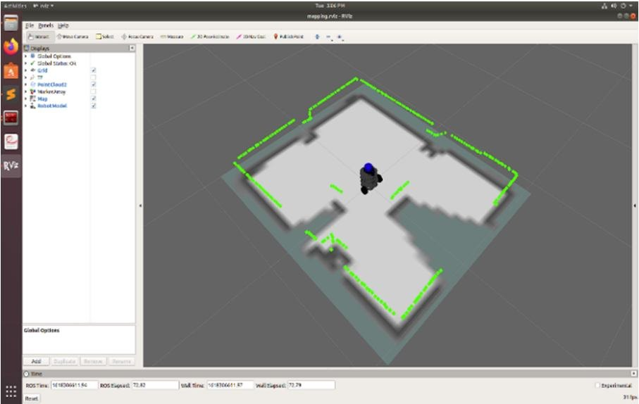

01
Hardware and wiring
- Raspberry Pi 4, motor driver, two geared DC motors, battery, LiDAR and camera.
- Wi-Fi link for teleoperation and SSH access for deploying new ROS packages.

02
Teleoperation and camera
- Joystick input becomes velocity commands through teleop_twist_joy.
- Camera video streams to a browser GUI through web_video_server and rosbridge_server.
03
Mapping and navigation
- gmapping builds a 2D occupancy grid from LiDAR scans.
- amcl localizes the robot on that map, and move_base plans and follows a path to the goal around obstacles.
- Tested first in a Gazebo world, then viewed live in RViz.

